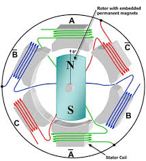
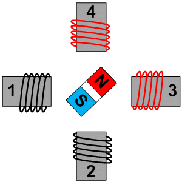
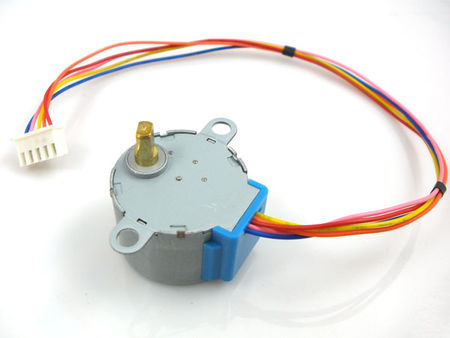
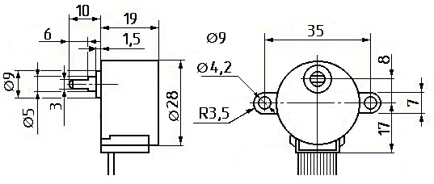
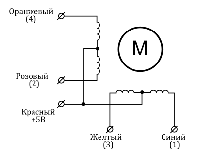

Шаговый двигатель 28BYJ-48
Шаговый двигатель - это мотор, который управляется несколькими электромагнитными катушками.
На центральном валу - роторе - расположены магниты. В зависимости от от того, есть ток на катушках, которые находятся вокруг вала, или нет, создаются магнитные поля, которые притягивают или отталкивают магниты на роторе. В результате вал шагового двигателя вращается. Подобная конструкция позволяет реализовать очень точное управление углом поворота ротора шагового двигателя относительно катушек - статора.
Шаговые двигатели используются в робототехнике, принтерах, манипуляторах, различных станках и прочих электронных приборах. Большим преимуществом шаговых двигателей над двигателями постоянного вращения является обеспечение точного углового позиционирования ротора. Также в шаговых двигателях имеется возможность быстрого старта, остановки, реверса.
Шаговый двигатель может точно перемещаться на минимально возможный угол, называемый шагом. Для практических задач можно считать, что шаговый мотор немного похож на сервопривод. Можно задать ему повернуться в некоторое положение и можно рассчитывать получить достаточно стабильные результаты в нескольких повторных экспериментах. Обычно, сервоприводы ограничены углом поворота в диапазоне от 0 до 180°, шаговый же двигатель может вращаться непрерывно, подобно двигателю постоянного тока. Преимуществом шаговых двигателей является то, что можно достичь гораздо большей степени контроля над движением. К недостатком шаговых двигателей можно отнести несколько более сложное управление, чем в случаях с сервами или моторами постоянного тока.
Можно выделить два основных типа шаговых двигателей: униполярные и биполярные. Униполярные шаговые двигатели имеют пять или шесть контактов для подключения и четыре электромагнитные катушки в корпусе (если быть более точными, то две катушки, разделенные на четыре). Центральные контакты катушек соединены вместе и используются для подачи питания на двигатель. Эти шаговые моторы называются униполярными, потому-что питание всегда подается на один из этих полюсов.
Принцип работы шагового двигателя

Шаговый двигатель обеспечивает вращения ротора на заданный угол при соответствующем управляющем сигнале. Благодаря этому можно контролировать положение узлов механизмов и выходить в заданную позицию. Работа двигателя осуществляется следующим образом – в центральном вале имеется ряд магнитов и несколько катушек. При подаче питания создается магнитное поле, которое воздействует на магниты и заставляет вал вращаться. Такие параметры как угол поворота (шаги), направление движения задаются в программе для микроконтроллера.

28BYJ-48 — это маленький, дешевый, 5 вольтовый шаговый мотор с редуктором. Передаточное число редуктора у него примерно 64:1, что позволяет получить вполне достойный крутящий момент для мотора такого размера и скорость порядка 15 об/мин. С некоторыми программными хитростями для постепенного ускорения можно достичь более 25 об/мин.


Таблица 1
| Тип мотора | Униполярный шаговый двигатель |
| Число фаз | 4 |
| Подключение | 5-выводов (к контроллеру двигателя) |
| Рабочее напряжение | 5-12 В |
| Частота | 100 Гц |
| Сопротивление по постоянному току | 50 Ом±7% (25°C) |
| Частота под нагрузкой | > 600 Гц |
| Частота на холостом ходу | > 1000 Гц |
| Крутящий момент | > 34.3 мН·м (120 Гц) |
| Момент самопозиционирования | > 34.3 мН·м |
| Стопорящий момент | 600-1200 г·см |
| Тяга | 300 г·см |
| Сопротивление изоляции | > 10 МОм (500 В) |
| Класс изоляции | A |
| Шум | < 35 дБ (120 Гц, без нагрузки, 10 см) |
| Режим шага | Рекомендован полушаговый режим (8-шаговая управляющая сигнальная последовательность) |
| Угол шага | Полушаговый режим: 8-шаговая управляющая сигнальная последовательность (рекомендовано). 5,625 градусов на шаг, 64 шага на оборот внутреннего вала мотора. Режим полного шага: 4-шаговая управляющая сигнальная последовательность. 11,25°/шаг, 32 шага на оборот внутреннего вала двигателя. |
| Передаточное отношение редуктора | 64:1 |
| Подключение к контроллеру ULN2003 | A (синий), B (розовый), C (желтый), D (Оранжевый), E (красный, средний вывод обмоток) |
| Вес | 30г |
Двигатель имеет четыре обмотки, которые запитываются последовательно, чтобы повернуть вал с магнитом.

Чаще всего, при использовании шагового двигателя 28BYJ 48, используют два режима подключения.
- Полношаговый режим — за 1 такт, ротор делает 1 шаг.
- Полушаговый режим — за 1 такт, ротор делает 1/2 шага.
Когда используется полношаговый метод управления, две из четырех обмоток запитываются на каждом шаге. Идущая вместе с Arduino IDE библиотека Stepper использует такой способ.
Таблица 2
| Провод | 1 | 2 | 3 | 4 |
|---|---|---|---|---|
| 4-Оранжевый | ||||
| 3-Желтый | ||||
| 2-Розовый | ||||
| 1-Синий |
Предпочтительным является использование метода полушага, при котором сначала запитывается только 1 обмотка, затем вместе первая и вторая обмотки, затем только вторая обмотка и так далее. С 4 обмотками это дает 8 различных сигналов, как показано в таблице 3.
Таблица 3
| Провод | 1 | 2 | 3 | 4 | 5 | 6 | 7 | 8 |
|---|---|---|---|---|---|---|---|---|
| 4-Оранжевый | ||||||||
| 3-Желтый | ||||||||
| 2-Розовый | ||||||||
| 1-Синий |
Источники
arduino-diy.com - Arduino, шаговый двигатель 28-BYJ48 и драйвер ULN2003
robot-kit.ru - Подключение шагового двигателя 28BYJ-48-5V к Arduino. Часть 1.
robot-kit.ru - Подключение шагового двигателя 28BYJ-48-5V к Arduino. Часть 2.
robot-kit.ru - Подключение шагового двигателя 28BYJ-48-5V к Arduino. Часть 3.
robotosha.ru - Шаговый двигатель 28BYJ-48 с драйвером ULN2003 и Arduino UNO
arduinomaster.ru - Шаговые двигатели и моторы Ардуино 28BYJ-48 с драйвером ULN2003